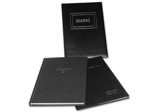

Fiscalitat i documentació bàsica
La creació d’una empresa implica fer tota una sèrie de tràmits i documents. També cal conèixer els principals impostos que afecten les empreses que duen a terme la seva activitat a Espanya i la documentació bàsica empresarial necessària per a la gestió diària de l’empresa.
Els documents mercantils
L’empresa empra tota una sèrie de documents en les relacions que té amb els socis, altres empreses i els organismes de l’Estat. La documentació bàsica s’utilitzarà en les operacions mercantils amb proveïdors i clients, i amb la Hisenda pública per a la liquidació i el pagament d’impostos.
Factor de producció
Recurs utilitzat per a la producció de béns com matèries primeres, maquinària o mà d’obra.
La documentació mercantil utilitzada per l’empresa serveix per comunicar-se amb la resta dels agents econòmics (proveïdors, clients, Administració pública) i com a sistema de prova de la realització de les seves transaccions amb l’exterior.
Cada document mercantil reflecteix les diferents circumstàncies de la transacció que conté.
L’empresa, quan es relaciona amb els proveïdors, els clients o els bancs, utilitza tota una sèrie de documents anomenats mercantils. L’operació més utilitzada per l’empresa en el tràfic mercantil és la compravenda.
El client és el comprador de béns de l’empresa.
El proveïdor és el subministrador de béns a l’empresa.
La compravenda és un contracte en el qual el venedor s’obliga a entregar una cosa a un comprador a canvi del pagament d’un preu.
Les fases bàsiques del procés de la compravenda són:
- El comprador fa la comanda.
- El proveïdor lliura la mercaderia.
- El proveïdor comunica la quantitat a pagar.
- El client paga la factura.
- El client rep un justificant del pagament.
Com a conseqüència d’aquest procés, apareixen uns documents mercantils. Els més utilitzats són:
- Comanda.
- Albarà.
- Factura.
- Rebut.
- Lletra de canvi.
- Xec.
- Pagaré.
La comanda
NIF
Número de vuit dígits que coincideixen amb el document nacional d’identitat de l’individu, seguit d’una lletra, que es dóna a cada contribuent per controlar les seves activitats econòmiques.
El departament de compres és l’encarregat de gestionar i controlar les comandes i el responsable d’aconseguir les millors condicions de compra per a l’empresa. Les comandes es poden fer amb un imprès del comprador, un imprès del venedor, una carta comercial de comanda, telèfon, fax, NIF, Internet.
La comanda és la petició de compra que fa un client a un proveïdor per tal que aquest li subministri els béns i serveis demanats.
En la figura teniu un exemple de model de comanda. La comanda no és un model oficial i, per tant, l’empresa pot utilitzar el model que cregui més adient en funció de les característiques de l’entorn, les mercaderies que compri i de les seves necessitats.
Cada model de comanda ha d’incloure com a mínim les dades següents:
- Dades del comprador.
- Dades del venedor.
- Productes demanats (quantitat i tipus d’article).
- Número de referència de la comanda.
Exemple de comanda
L’empresa KLIPPAN, que es dedica a la compravenda de mobiliari d’oficina, fa una comanda de taules al seu proveïdor, l’empresa IRAN.
Dades de KLIPPAN:
- NIF: A-574938750
- Adreça: carrer Maura, 7, 08003 Barcelona
- Telèfon: 93.456.33.45
Dades d’IRAN:
- NIF: A-89335353
- Adreça: carrer Roure, 23, 08009 Barcelona
- Telèfon: 93.345.34.78
Comanda:
- 10 taules PILBO a 120 euros/taula
- 15 taules RIAN a 100 euros/taula
- IVA tipus 21%
El pagament es farà a 30 dies. Els costos de transport són a càrrec del venedor. Es lliurarà a l’adreça que consti com a domicili social de l’empresa. Data de la comanda: 13.02.XX. Data de lliurament: 27.02.XX. Número de comanda: 4532.
En la figura es mostra el model de comanda i en la figura la comanda que l’empresa KLIPPAN envia al seu proveïdor.
L'albarà
Quan el transportista lliura les mercaderies al comprador, fa entrega d’un document on detalla la quantitat i tipus d’articles. D’aquesta manera, el comprador pot verificar la correspondència entre el que ha demanat i el que li han lliurat. També serveix per indicar el treballador o treballadora que s’ha fet càrrec del gènere lliurat.
L’albarà és un document que elabora el venedor on detalla el gènere lliurat. Encara que no sigui un document mercantil obligatori, és un document molt habitual en les compravendes.
L’albarà s’utilitza com a document acreditatiu del lliurament de les existències als clients. Podem trobar diferents tipus d’albarà:
- Valorat. Descriu el gènere lliurat, els preus, descomptes, imports i impostos.
- Sense valorar. Només hi consta la quantitat de gènere i la descripció de la mercaderia.
Valorar és donar valor en diners.
En la figura teniu un exemple de model d’albarà. No és un model oficial i, en conseqüència, l’empresa pot utilitzar el que cregui més adient en funció de les característiques de les mercaderies que ven.
Les empreses fan descomptes pel volum de compres i pel pagament immediat.
Cada model d’albarà ha de contenir com a mínim les dades següents:
- Dades del comprador.
- Dades del venedor.
- Productes lliurats (quantitat i tipus d’article).
- Número de referència de l’albarà.
- Signatura del responsable que rep els articles.
Exemple d'albarà
L’empresa KLIPPAN rep de l’empresa IRAN la comanda, que coincideix exactament amb el que havia demanat; el proveïdor lliura també l’albarà (figura).
La factura
La factura és el document mercantil més important, ja que serveix de justificant i garantia legal de les compravendes. Els venedors estan obligats a emetre les factures quan fan les compravendes. La llei regula la forma de les factures.
La factura és un document expedit pel proveïdor i que rep el client en una operació de venda de gènere que recull la quantitat, els preus i les condicions de pagament de les mercaderies subministrades.
Totes les factures han de recollir com a mínim les dades següents:
- Número. Les factures s’han de numerar de manera correlativa.
- Nom i cognom o raó social de l’emissor, adreça i número d’identificació social.
- Nom i cognom o raó social del receptor, adreça i número d’identificació social.
- Descripció dels béns o serveis objecte de la factura.
- Contraprestació total de la transacció.
- IVA. Base imposable. Tipus. Quota.
- Lloc i data de l’emissió.
- Les societats han d’indicar les dades identificatives del Registre Mercantil.
El model de factura és lliure, sempre que hi constin les dades mínimes (vegeu-ne un model en la figura).
La quota és la base imposable per al tipus impositiu.
La base imposable és la suma de valor total dels béns sense incloure l’IVA.
Registrar és anotar una operació mercantil en un llibre.
Els empresaris estan obligats per la normativa que regula l’impost sobre el valor afegit a portar un llibre de registre de les factures emeses i un altre de les factures rebudes.
Exemple de factura
KLIPPAN, després de rebre els articles, rep la factura del seu proveïdor IRAN (figura). Totes les condicions pactades són respectades. Data de la factura: 01.03.10. Número de la factura: 56743.
El rebut
Hi ha diferents sistemes de justificar el pagament d’una factura com, per exemple, el justificant del pagament bancari, la constància del pagament en la factura i el rebut.
Segons el que s’acordi entre venedor i comprador, el pagament pot ser al comptat o ajornat. Els clients necessiten un document que justifiqui el pagament del seu deute; el document que fa aquesta funció és el rebut. El rebut és el document mercantil justificatiu del lliurament de diners com a pagament d’una factura o acompte sobre una futura compra.
Acompte és el lliurament de diners per compres futures.
El rebut és el document que dóna fe del valor, les condicions i les circumstàncies en què un pagament s’ha fet.
El rebut consta de diferents parts:
- El rebut consta de diferents parts:
- Capçalera: dades identificatives de l’emissor.
- Número.
- Identificació de qui fa el lliurament.
- Import expressat en lletres.
- Concepte pel qual es reben els diners.
- Lloc i data d’expedició.
- Signatura i segell de qui rep els diners.
- Import expressat en lletres i números.
La figura representa un possible model de rebut. Cada empresa adaptarà el model de rebut a les seves necessitats.
Aquest model de rebut va en un talonari. La part de l’esquerra és la matriu que queda al talonari i la part de la dreta es lliura al pagador.
La lletra de canvi
El venedor pot acordar amb el comprador l’ajornament del pagament de la factura. Un sistema de documentar aquest pagament és la lletra de canvi.
La lletra de canvi és un document mercantil pel qual una persona (lliurador) ordena a una altra (lliurat) el pagament d’una determinada quantitat de diners en una data i un lloc determinats.
El pagament de la lletra es pot fer a un tercer (prenedor), a qui el lliurador ha transmès la lletra de canvi.
Parts que intervenen en la lletra de canvi:
- El lliurador: és la persona creditora del deute que fa l’emissió de la lletra de canvi perquè el lliurat (deutor) l’accepti i es faci càrrec de pagar-la.
- El lliurat: és el deutor que ha de pagar el deute quan arribi la data del venciment. El lliurat pot acceptar o no l’ordre de pagament. Si l’accepta, quedarà obligat al pagament.
- El prenedor: és la persona que té en poder seu la lletra de canvi i que té el dret de cobrament. El prenedor també rep el nom de tenidor.
- L’endossador: és la persona que endossa una lletra a un tercer.
- L’endossatari: és la persona a favor de la qual s’endossa la lletra de canvi.
- L’avalador: és la persona que respon del pagament de la lletra.
El deutor és la persona que té una obligació de pagament pendent.
Els tràmits i les gestions més usuals amb una lletra de canvi són els següents:
El creditor és la persona que encara no ha cobrat un dret de cobrament.
- Acceptació de la lletra de canvi: declaració del lliurat (deutor) per la qual assumeix l’obligació de pagar a qui tingui la lletra quan es compleixi el venciment. Per aquesta declaració el lliurat es converteix en acceptant.
- Endossament: declaració continguda en la lletra de canvi per la qual el lliurador (endossador) transmet el dret de cobrament a una altra persona (endossatari o prenedor). Aquesta adquireix els mateixos drets que tenia el lliurador. L’endossador respon del pagament davant de tots els que vagin adquirint la lletra amb posterioritat.
- L’aval: és la declaració per la qual una persona avaladora respon del pagament de la lletra de canvi si el lliurat no paga. Després, l’avalador en pot exigir el pagament al lliurat.
- El protest: és un acte notarial que serveix per acreditar que s’ha produït la falta d’acceptació o de pagament de la lletra de canvi.
- Descompte de la lletra de canvi: un banc pot avançar al prenedor de la lletra de canvi el dret de cobrament després de descomptar uns interessos en funció del temps que falta fins al venciment i unes comissions.
L’avalador és la persona que s’obliga al pagament d’un deute si el deutor no paga.
La lletra de canvi ha de complir uns requisits, que són els següents:
- La denominació de lletra de canvi en el mateix text del títol i expressat en el mateix idioma emprat en la redacció del document.
- L’ordre de pagar una suma determinada. Si la quantitat expressada en lletres és diferent de la quantitat expressada en nombres, prevaldrà la quantitat que està en lletres.
- Nom, cognom i adreça de qui ha de pagar.
- La data de venciment. Si no hi està indicada, se suposa a la vista.
- Lloc on s’ha d’efectuar el pagament.
- Nom i cognoms de la persona a qui s’ha de fer el pagament.
- Lloc i data d’emissió de la lletra de canvi.
- Signatura de qui emet la lletra de canvi.
- Signatura de qui accepta la lletra de canvi.
Venciment
Venciment és la data en què el deutor ha de pagar el nominal de la lletra. Si es paga en la data que es presenta per cobrar es diu que és venciment a la vista.
La lletra de canvi ha de tenir una forma específica: s’ha d’expedir en un imprès oficial o timbre emès per l’Estat. L’import estarà en proporció a la quantia del dret de cobrament.
La figura representa el model oficial de lletra de canvi. Aquestes lletres són emeses per l’Estat i impreses per la Fàbrica Nacional de Moneda i Timbre.
El xec
Un client pot pagar un deute amb els diners que té dipositats en el compte corrent d’un banc. El xec serveix perquè el deutor indiqui al banc que pagui a una persona una quantitat de diners.
El xec és un document mercantil pel qual un banc o entitat de crèdit s’obliga al pagament d’una determinada quantitat per l’ordre d’un dels seus clients i amb càrrec al compte bancari del client.
El xec ha de complir els requisits formals següents:
- La denominació de xec en el títol.
- El nom de qui ha de pagar o lliurat, que necessàriament haurà de ser un banc o entitat financera.
- Quantitat a pagar, que pot aparèixer expressada en euros o en moneda estrangera convertible admesa a cotització oficial. Si la quantitat expressada en lletres i la quantitat expressada en nombres no coincideixen, prevaldrà la quantitat escrita en lletres.
- Lloc de pagament.
- Data i lloc d’emissió.
- Signatura del lliurador.
El xec es pot cobrar des del moment en què es rep.
El banc o caixa pagarà el xec sempre que hi hagi fons en el compte del lliurador. Si no hi ha saldo suficient, el banc pot pagar parcialment amb el lí-
mit del saldo existent en el compte bancari. Els diferents tipus de xecs que hi ha són els següents:
- Xec conformat: el banc garanteix l’autenticitat de la signatura del lliurador i l’existència de fons en la quantia indicada en el xec.
- Xec barrat: el xec només pot ser abonat en el compte del beneficiari del xec.
- Xec nominatiu a favor d’una persona determinada: s’identifica el beneficiari amb el seu nom i cognom.
- Xec emès al portador: qualsevol persona pot cobrar el xec.
El xec es paga quan es presenta al banc per cobrar-lo.
En la figura podeu observar un model de xec. Cada entitat bancària emet els seus propis xecs.
El pagaré
Un client que vulgui pagar un deute amb càrrec en un compte corrent en una data futura amb la seguretat que fins llavors no se’n farà el càrrec pot lliurar al proveïdor un pagaré.
El pagaré és un document escrit amb el qual una persona es compromet a pagar a una altra una determinada quantitat de diners en una data acordada amb càrrec en un compte corrent.
El pagaré és un títol valor similar a la lletra de canvi. El creditor lliura la lletra de canvi i el deutor lliura el pagaré. Els pagarés poden ser al portador o endossables; és a dir, que es poden transmetre a un tercer i ser emesos per particulars, empreses o l’Estat.
El pagaré es paga en la data indicada en el pagaré.
Les parts que intervenen en el pagaré són les següents:
- El lliurat: és qui es compromet a pagar la suma de diners a la vista o en una data futura fixa o determinable. La figura del lliurat coincideix amb la del lliurador, que és aquell que emet el pagaré.
- El beneficiari o tenidor: és aquell a l’ordre de qui s’ha de fer el pagament de la suma de diners estipulada en el pagaré.
- L’avalador: és la persona que garanteix el pagament del pagaré.
L’avalador pot ser una persona o una entitat financera.
El pagaré ha de tenir els requisits següents (figura):
- La denominació de pagaré.
- El venciment o la data en la qual s’haurà d’abonar.
- L’import de la quantitat a abonar.
- El lloc en el qual cal efectuar el pagament.
- El nom de la persona a la qual cal efectuar el pagament.
- El lloc i la data de lliurament.
- La signatura del deutor.
Les obligacions fiscals
Els estats necessiten recaptar diners per poder finançar els serveis que donen als seus ciutadans. La forma més important d’aconseguir ingressos és obligar particulars i empreses a pagar impostos.
-

- Logo de l'Agència Tributària espanyola
Un impost és una obligació de pagar determinades quantitats de diners que posa l’Estat a les persones per la realització de determinats fets econòmics i així obté ingressos per poder finançar la despesa pública.
Els impostos
Els impostos són els tributs mitjançant els quals les administracions públiques aconsegueixen la major part dels seus ingressos. Els impostos que tenen més incidència en l’empresa i que tractarem són:
- Impost sobre la renda de les persones físiques (IRPF).
- Impost sobre societats (IS).
- Impost sobre el valor afegit (IVA).
- Impost sobre activitats econòmiques (IAE).
La fiscalitat directa de les empreses
Els impostos directes són impostos que graven l’obtenció d’una renda per part d’una persona concreta, ja sigui una persona física o una persona jurídica. En tenim quatre de diferents: l’impost sobre la renda de les persones físiques (IRPF); l’impost sobre societats; l’impost sobre el patrimoni i l’impost sobre successions i donacions.
L'impost sobre la renda de les persones físiques (IRPF)
El més conegut dels impostos del sistema tributari espanyol és l’impost sobre la renda de les persones físiques.
Un impost directe grava l’obtenció de rendes o la possessió de rendes.
L’impost sobre la renda de les persones físiques és un impost directe, personal -és a dir, té en compte les circumstàncies personals de cada subjecte passiui progressiu. Grava els rendiments nets obtinguts pels subjectes passius durant l’exercici, així com els guanys i les pèrdues patrimonials.
L’impost progressiu és el que incrementa la tarifa de l’impost en augmentar la base imposable.
Article 1 de la Llei de l'IRPF
L’impost sobre la renda de les persones físiques és un tribut de caràcter personal i directe que grava, segons els principis d’igualtat, generalitat i progressivitat, la renda de les persones físiques d’acord amb la seva naturalesa i circumstàncies personals i familiars.
Fet imposable
El fet imposable de l’IRPF és l’obtenció de renda per part del subjecte passiu. Alguns empresaris estan obligats a pagar pels seus beneficis empresarials a través de l’IRPF. Les rendes subjectes a aquest impost són:
El fet imposable és la conducta que obliga a pagar un impost.
- Rendiments del treball personal.
- Rendiments del capital immobiliari.
- Rendiments del capital mobiliari.
- Rendiments d’activitats econòmiques.
- Guanys i pèrdues patrimonials.
Subjecte passiu
Es consideren subjectes passius de l’impost les persones físiques que tenen la seva residència habitual al territori espanyol. L’IRPF grava la totalitat de la renda obtinguda pel subjecte passiu, amb independència del lloc on s’hagi produït. Per tant, es grava la renda mundial del contribuent, independentment que sigui espanyol o estranger. Les empreses subjectes a l’IRPF són:
El subjecte passiu és la persona física o jurídica obligada al pagament d’un impost.
- L’empresari o empresària individual.
- La societat civil privada.
- La societat civil pública.
Període d'imposició
El període impositiu coincideix amb l’any natural. En cas de mort del contribuent, el període impositiu finalitza el dia de la mort.
Components de la base imposable
- Rendiments del treball: són tots aquells rendiments íntegres -dineraris o en espècie- fruit del treball personal -sia mitjançant relació laboral o estatutària- que no puguin ser considerats com a rendiments d’activitats econòmiques.
- Rendiments del capital immobiliari: són tots aquells rendiments procedents de la propietat d’immoble que es derivin de lloguers.
- Rendiments del capital mobiliari: són tots aquells rendiments procedents d’elements patrimonials mobiliaris com interessos de comptes corrents, dividends de participacions en empreses, etc.
- Rendiments d’activitats econòmiques: són tots aquells rendiments que procedeixen del treball personal i/o del capital, sempre que suposin l’ordenació pròpia dels mitjans de producció i dels recursos humans, amb la finalitat de produir o distribuir un bé o servei.
- Guanys i pèrdues patrimonials: són totes les variacions del valor del patrimoni del subjecte passiu que produeixin una alteració en la composició d’aquest com a conseqüència d’una transmissió onerosa o lucrativa o de la incorporació de béns o drets al patrimoni del contribuent. En termes generals, s’integren a la base de l’estalvi les que provenen de la transmissió d’elements patrimonials.
Rendiment en espècie
El rendiment en espècie són retribucions que no són en diners com l’habitatge, el cotxe, les assegurances de vida, el xec menjador, etc.
L'impost sobre societats
La majoria de les empreses que tenen forma de societat tributen pels beneficis que obtenen per l’impost sobre societats.
L’impost sobre societats és l’equivalent a l’impost de la renda de les persones físiques per a les empreses.
L’impost sobre societatsés un tribut de caràcter directe (és a dir, grava l’obtenció de renda), naturalesa personal (té en consideració les circumstàncies del subjecte passiu) i sintètic (no diferencia, en principi, segons la font o origen de la renda) que grava la renda de les societats i altres entitats jurídiques.
Com es desprèn de la seva definició, l’impost sobre societats grava l’obtenció de renda pel subjecte passiu, sigui quina sigui la seva font o origen.
El fet imposable
Com que aquest impost grava la renda de les societats i altres entitats jurídiques, el seu fet imposable és l’obtenció de renda per part d’aquests subjectes, sigui quin sigui el seu origen. A més la renda és gravada tant si s’obté en diners com en espècie.
Subjecte passiu
Els subjectes passius de l’impost sobre societats són les persones jurídiques, excepte les societats civils i les comunitats de béns. No han de presentar declaració de l’impost sobre societats les administracions públiques i algunes fundacions.
Normativa de l'IS
L’impost de societats es regula per:
- RD legislatiu 4/2004, pel qual s’aprova el text refós de la Llei de l’impost de societats.
- RD 1777/2004, pel qual s’aprova el Reglament de l’impost de societats.
- Llei 35/2006, de modificació parcial de l’impost de societats.
Subjectes passius
Són:
- Les persones jurídiques, excepte les societats civils.
- Els fons d’inversió.
- Les unions temporals d’empreses.
- Els fons de capital risc.
- Els fons de pensions.
Tributaran per aquest impost totes les persones jurídiques excepte les societats civils residents en territori espanyol, independentment del lloc on obtinguin les seves rendes, a més d’altres entitats reconegudes en l’article 7 de la llei de l’impost de societats.
També tributaran per l’impost de societats les empreses estrangeres que hagin obtingut rendes dins del territori espanyol.
Es consideren residents en territori espanyol...
… les entitats següents:
- Les constituïdes conforme a les lleis espanyoles.
- Les que tenen el domicili al territori espanyol.
- Les que tenen la direcció efectiva al territori espanyol.
La llei fixa tota una sèrie de persones jurídiques exemptes de tributar totalment o parcialment.
Persones jurídiques exemptes de l'impost de societats
- L’Estat, les comunitats autònomes i les entitats locals; com també els seus organismes autònoms.
- El Banc d’Espanya, els fons de garantia de dipòsits i els fons de garanties d’inversions.
- Les entitats públiques de la Seguretat Social.
- L’Institut d’Espanya i les institucions de les comunitats autònomes amb finalitats similars.
Persones jurídiques exemptes parcialment de l'impost de societats
- Les fundacions, els establiments, les institucions i les associacions amb caràcter no lucratiu.
- Les unions, les federacions i les confederacions de cooperatives.
- Els col·legis professionals, les associacions empresarials, les cambres oficials, els sindicats de treballadors i els partits polítics.
- Els fons de promoció de l’ocupació.
- Les mútues d’accidents de treball i malalties professionals de la Seguretat Social.
Base imposable
La base imposable es calcula a partir del resultat comptable, és a dir, com a diferència entre els ingressos i les despeses registrats en els llibres de comptabilitat de l’empresa. S’aplica uns ajustos al resultat comptable perquè els criteris de reconeixement d’ingressos i despeses són diferents de l’impost sobre societats i de les normes comptables.
Llibres de comptabilitat
Els llibres de comptabilitat són:
- Llibre diari.
- Llibre major.
- Llibre d’actes.
- Llibre d’inventaris i comptes anuals.
- Quota íntegra. La quota íntegra resulta d’aplicar a la base imposable el tipus de l’impost sobre societats.
Base imposable × tipus = quota íntegra
- Quota líquida. La quota líquida resulta de restar determinades deduccions a la quota íntegra.
Quota íntegra - deduccions = quota líquida
- Quota diferencial. La quota diferencial resulta de restar les retencions, els pagaments a compte i els pagaments fraccionats a la quota líquida. És la quantitat de diners que l’empresa ha de pagar quan fa la declaració; si és negativa, la Hisenda pública li tornarà diners. El càlcul de la quota diferencial s’obté de la manera següent:
Deduccions
Les deduccions minoren la quota íntegra per diferents motius com la contractació de determinats tipus de treballadors o fer determinades inversions.
Quota líquida
- Retencions
- Pagaments a compte
- Pagaments fraccionats
= Quota diferencial a ingressar o retornar
Liquidació de l'impost sobre societats
Per al càlcul de la liquidació de l’impost sobre societats, s’han de fer les operacions següents:
Resultat comptable
+/- Ajustos extracomptables (positius i negatius)
- Exempcions per evitar la doble imposició internacional
- Deducció de fons de comerç financer internacional
- Deducció per inversions per a la implantació d’empreses a l’estranger
- Compensació de BI negatives procedents d’exercicis anteriors
= Base imposable x tipus gravamen = quota íntegra
- Deduccions per doble imposició interna de dividends
- Deducció per doble imposició internacional
- Bonificacions
= Quota íntegra ajustada positiva
- Deducció per inversions i creació d’ocupació
= Quota líquida
- Retencions i ingressos a compte
- Quota de l’exercici (a ingressar o retornar)
- Pagaments fraccionats
= Quota diferencial
+ Increments per pèrdua de beneficis fiscals gaudits en exercicis anteriors
+ Interessos de demora
= Líquid a ingressar o retornar
En la figura podem apreciar l’esquema general de l’impost de societats, des que l’empresa recull tota la informació comptable fins que es determina, si és el cas, la quota a ingressar en l’Administració tributària.
Els tipus impositius
Hi ha diversos tipus impositius, encara que el general és el tipus impositiu del 30%.
El regim de la petita i mitjana empresa (pime), és a dir, d’aquelles empreses amb facturació inferior a vuit milions d’euros, queda fixat en un 25%, que s’aplicarà als primers 120.202,41 € de la seva base imposable, mentre que la part excedent tributarà al tipus general del 30%.
Període impositiu
En l’impost de societats, el període impositiu no ha de coincidir necessàriament amb l’any natural, com passa en altres impostos. Estarà en funció de l’exercici econòmic de l’entitat. Si bé no podrà ser superior a 12 mesos.
El tipus de gravamen de les entitats dedicades a l’exploració, investigació i explotació d’hidrocarburs és del 35%.
Bonificacions i deduccions
La política fiscal d’un país és un instrument que permet als seus governants influir en diversos aspectes per incentivar l’economia del país. En aquest sentit, les bonificacions que regula la llei de l’impost de societats són uns incentius econòmics que l’Administració promou per tal que les empreses afavoreixin l’economia del país.
Ceuta i Melilla
La part de quota íntegra que correspongui a rendes obtingudes per empreses que operen a Ceuta i Melilla disposen d’una bonificació del 50%.
Així es creen bonificacions perquè les empreses inverteixin en determinades zones, com és el cas de Ceuta i Melilla.
També es creen bonificacions que afavoreixen l’activitat exportadora de determinades àrees de l’activitat productiva.
En la mateixa línia d’incentivar o protegir uns sectors determinats trobem les deduccions.
Deduccions previstes en la Llei de l'impost de societats
La llei preveu deduccions per incentivar la realització de determinades activitats, com són:
- Les activitats d’investigació.
- La internacionalització de les empreses, és a dir, que aquestes obrin oficines o representacions a l’exterior.
- Les inversions en béns culturals.
- Les inversions en formació professional.
- La creació de llocs de treball per a disminuïts.
La llei també té en compte i preveu la possibilitat que el subjecte passiu hagi de tributar pel mateix concepte més d’una vegada, tant en l’àmbit intern del país com respecte a d’altres estats. És el que anomena deduccions per doble imposició.
Pagament fraccionat
Terminis pagament fraccionat
Excepcionalment el Govern pot modificar els terminis de pagament. Així l’any 2008 es va ampliar el termini per efectuar el primer pagament fraccionat per tal de facilitar el compliment de les obligacions fiscals als contribuents afectats per l’entrada en vigor en el mateix any de la nova normativa comptable (reials decrets 1514 i 1515/2007), fins al dia 5 de maig.
Els primers 20 dies naturals d’abril, octubre i desembre les empreses han d’efectuar un pagament fraccionat a compte de la liquidació del període impositiu de l’impost.
Hi ha dues fórmules per fer els càlculs del pagament fraccionat:
1) Es pren com a referència l’últim pagament efectuat per l’empresa en el mateix mes però de l’any anterior. S’aplica el 18 % a la seva base a la vegada que es minoren les deduccions, bonificacions, retencions i ingressos a compte.
2) S’utilitza una fórmula progressiva:
- Pagament fraccionat d’abril (PFa) = 5/7 tipus de gravamen base imposable
- Pagament fraccionat d’octubre (PFo) = 5/7 tipus de gravamen base imposable - Pfa
- Pagament fraccionat d’octubre (PFo) = 5/7 tipus de gravamen base imposable - (PFa + PFo)
Amb l’aplicació de la reforma per al 2008, els subjectes passius poden escollir el mètode de càlcul i fer el pagament per qualsevol de les dues fórmules anteriors, amb independència que siguin considerats o no grans empreses, i de l’opció que prèviament hagin pogut exercitar, com es feia abans de la reforma.
L'impost sobre successions i donacions
Pròrroga del pagament en successions
Si en els primers cinc mesos, després de la defunció, es presenta una sol·licitud de pròrroga, s’amplia el termini de presentació de l’impost fins a sis mesos més. De tota manera, s’han d’abonar interessos pel període prorrogat.
L’impost sobre successions i donacions és un impost que no té tan sols relació amb l’herència. Recull tres figures impositives ben diferenciades:
- La transmissió de béns o drets per herència o qualsevol mena de títol successori.
- L’adquisició de béns per donacions o de manera gratuïta i en actes in- ter vivos.
- La percepció de quantitats per contractes d’assegurances de vida.
1) El fet imposable. Està format pels béns o drets que formen l’herència o la donació subjecta a tributació. També pot estar format per les quantitats percebudes a partir de contractes d’assegurances de vida.
Base imposable en el cas d'assegurances
Si es perceben quantitats procedents de contractes d’assegurances sobre la vida, la base imposable es correspon amb la quantitat total percebuda. Si el que es percep és una renda, la base és el valor actual de la pensió. El beneficiari pot sol·licitar el fraccionament del pagament en tants anys com percebi la pensió, si és temporal, o bé en quinze anys, si és vitalícia.
El termini de presentació de l’impost en el cas d’herències o de llegats és de sis mesos, a comptar des de la data de la defunció. El termini de presentació de l’impost a les donacions és d’un mes des de la data de l’acte.
2) El subjecte passiu. En les adquisicions mortis causa seran els beneficiaris; en les donacions i transmissions lucratives inter vivos són qui rep el bé o el dret; i, en les assegurances de vida, els beneficiaris.
3) La base imposable. En el cas de les successions és el resultat de minorar a tots els béns i drets del difunt les despeses efectuades amb motiu de la mort i les deduccions practicables. Es calcula segons la fórmula descrita.
Base imposable (massa hereditària neta) = massa hereditària - despeses - deduccions + assegurances de vida
Massa hereditària = valor real dels béns i drets que constitueixen l’herència + 3% de la suma dels béns declarats (= l’aixovar domèstic del difunt) - 3% del valor cadastral de l’habitatge habitual (només si n’hi ha cònjuge sobrevivent) - (si n’hi ha) despeses pel litigi de l’herència, despeses de l’última malaltia, enterrament, funeral - càrregues o deutes del difunt (hipoteques, pensions…) + (si n’hi ha) assegurances de vida.
La base imposable en el cas de donacions és el valor net dels béns i drets adquirits. S’obté de minorar al valor real dels béns i drets adquirits, les càrregues i deutes que siguin deduïbles.
4) La base liquidable. És el resultat d’aplicar a la base imposable les reduccions establertes en la Llei de l’impost.
Múltiples donacions
Quan un donant fa diverses donacions a la mateixa persona dins el termini de tres anys, l’import de les donacions anteriors s’acumula a la que s’estigui liquidant per tal de calcular el tipus mitjà de gravamen de la donació.
5) La quota íntegra i la quota líquida. La quota íntegra es calcula a partir de la base liquidable, a la qual s’aplica l’escala de l’impost que sigui vigent. Per calcular la quota liquida es tenen en compte dos factors:
- La quantia del patrimoni preexistent.
- El tipus de parentiu que tingui la persona que hereta amb el difunt.
A partir d’aquestes dades s’aplica sobre la quota íntegra el coeficient multiplicador que correspongui.
Estudi dels impostos indirectes i dels tributs municipals en les empreses
Els impostos indirectes són els impostos que recauen sobre el consum, sia el consum d’un bé en particular o el consum de béns en general.
L’impost indirecte més important per a les empreses és l’impost sobre el valor afegit (IVA); darrere seu hi ha l’impost sobre transmissions patrimonials i actes jurídics documentats.
Són també importants en el trànsit mercantil els impostos municipals i un conjunt d’impostos especials que graven el consum en particular d’uns béns determinats.
L'impost sobre el valor afegit (IVA)
Una de les condicions per a l’entrada d’Espanya a la Unió Europea l’any 1986 va ser la introducció en el sistema fiscal de l’impost sobre el valor afegit (IVA).
Aquest tribut és neutral per a l’empresa, perquè no li suposa ni un ingrés ni una despesa. L’empresa paga l’impost quan compra béns i serveis i cobra l’impost quan ven béns i serveis. Cada trimestre paga a la Hisenda pública ladiferència entre les quotes d’IVA repercutit i les quotes d’IVA suportat.
L’IVA és un tribut general de naturalesa indirecta que grava el consum de béns i serveis produïts o comercialitzats en el desenvolupament de les activitats empresarials o professionals.
Les característiques de l’impost sobre el valor afegit són les següents:
- És general perquè grava totes les fases del procés de producció i distribució de béns i serveis i, a més, perquè afecta tots els sectors econòmics.
- És indirecte perquè grava el consum. L’IVA és un impost sobre el consum, ja que afecta els particulars no pel que posseeixen ni pels ingressos que obtenen, sinó pel que gasten consumint.
- No té en compte la situació personal o familiar de la persona.
- És neutral perquè no suposa cap despesa ni ingrés per a l’empresari. L’empresari suporta un IVA per totes les adquisicions de béns i serveis.Quan l’empresari ven els productes, repercuteix un IVA.
- Està harmonitzat en l’àmbit comunitari. La normativa que regula l’IVA és similar a tota la Unió Europea.
L’impost sobre el valor afegit (IVA) és un impost indirecte que grava el consum en general.
Un impost està harmonitzat quan té característiques similars en diferents països.
El territori d’aplicació de l’impost és tot l’Estat espanyol, excepte les Canàries, Ceuta i Melilla.
Prestacions exemptes de pagar IVA
Són:
- L’assistència sanitària i les activitats d’assistència social, esportiva i cultural.
- L’educació en gairebé tots els seus àmbits.
- Algunes operacions financeres.
- Diverses operacions immobiliàries.
- Determinades exportacions.
Paguem l’impost a la persona que ens ven el producte o que ens presta el servei. Aquesta persona únicament fa de recaptador de l’impost o d’intermediari ja que després estarà obligada a ingressar l’import de l’impost que li hem pagat a la Hisenda pública, com es pot apreciar en l’esquema de la figura.
Cal assenyalar que la persona que ens ven el producte o que ens presta el servei també ha suportat algun IVA quan ha comprat les matèries per elaborar el producte o per poder prestar el servei.
Exemple d'IVA
L’empresa Margarida perfums, SA calcula que el cost total de cada pot de perfum de 50 ml que fabrica és de 4,5 € .També ha calculat que per obtenir els beneficis anuals que tenia previst per al primer trimestre de l’any necessita incrementar el preu en un 20% (0,90 €), és a dir, el preu del pot de perfum de 50 ml serà de 5,4 € .
Però el preu de venda al públic de cada pot de perfum és de 6.53 € . La diferència entre el preu fixat pel fabricant i el preu de venda al públic rau en l’impost que està obligat a aplicar-li, que en aquest cas és un IVA del 21%: 1.13 €.
Les normes comunitàries prohibeixen l’existència de tributs sobre el total de negocis diferents de l’IVA, és a dir, està prohibida l’existència de tributs que es puguin recaptar en totes les fases del procés de producció i distribució dels productes, i només es grava el producte quan es consumeix.
Operacions subjectes a l'impost sobre el valor afegit
No totes les transaccions estan subjectes a l’impost sobre el valor afegit. Les transaccions subjectes a l’impost són:
- Els lliuraments de béns i les prestacions de serveis fets en l’àmbit d’aplicació de l’impost per empresaris o professionals a títol onerós, amb caràcter habitual ocasional, en el desenvolupament de la seva activitat empresarial o professional.
- Les adquisicions dins la Unió Europea.
- Les importacions de béns.
Exempcions de l'impost
Hi ha diverses situacions en què es té una exempció fiscal de l’impost sobre el valor afegit, és a dir, que no hi ha l’obligació de pagar aquest impost. Poden ser de dos tipus:
L’exempció fiscal és la situació en la qual no hi ha l’obligació de pagar un determinat impost.
- Limitades: el subjecte passiu no pot repercutir l’impost ni deduir-se les quotes d’IVA suportades en les adquisicions. Per exemple:
- Serveis mèdics i sanitaris.
- Serveis socials.
- Educació.
- Assegurances.
- Operacions financeres.
- Plenes: el subjecte passiu no pot repercutir l’IVA, però es pot deduir les quotes suportades en les adquisicions.
Base imposable
La base imposable de l’impost sobre el valor afegit és l’import total de la contraprestació de les operacions subjectes. Està formada pels elements següents:
- Despeses generals com comissions, transports i assegurances.
- Tributs.
- Envasos i embalatges.
Tipus impositius
Els tipus impositius -és a dir, el percentatge que s’aplica sobre la base imponible per calcular la quota en l’impost sobre el valor afegitsón:
El tipus impositiu és el percentatge que s’aplica sobre la base imposable per calcular la quota.
La llei d’IVA distingeix tres tipus (llei 37/1992, de 28 de desembre, modificada a 1 de gener de 2009 i posteriorment actualizada pel Reial Decret Llei 20/2012, de 13 de juliol): en termes generals, quan més bàsica és una necessitat, menor IVA s’aplica.
Els tipus d’IVA vigents són:
- Tipus general: 21%. És el tipus que s’aplica per defecte.
- Tipus reduït: 10%. Aquest tipus s’aplica en els casos següents:
- Lliurament de béns: productes alimentaris, aigua, materials per a activitats agrícoles, forestals i ramaderes, medicaments per a ús veterinari, aparells i material sanitari.
- Prestació de serveis: transport de viatgers; hostaleria i restaurants, activitats agrícoles, forestals i ramaderes; neteja urbana; assistència social; fires i exposicions comercials; certes obres de construcció i rehabilitació d’habitatges.
- Tipus superreduït: 4%. Aplicable fonamentalment a aliments de primera necessitat (formatges, fruites, llegums, llet, pa), llibres, diaris i revistes, , especialitats farmacèutiques per a ús humà, pròtesis i vehicles per a minusvàlids, habitatges de protecció oficial, i serveis de reparacions i adaptació de vehicles de minusvàlids.
Quota de l'IVA
El càlcul de la quota de l’impost sobre el valor afegit es fa amb la fórmula següent:
Base imposable × tipus impositiu = quota
Funcionament
- 
- Llibres comptables. Un dels llibres comptables més importants són els de l'IVA.
L’empresari està obligat a portar uns llibres on registrarà les operacions subjectes a l’IVA. Els llibres registre de l’IVA són:
- Llibre registre de factures rebudes.
- Llibre registre de béns d’inversió.
- Llibre registre de factures emeses.
Cada trimestre l’empresari calcula el total de l’IVA repercutit i el total de l’IVA suportat amb la informació dels llibres de l’IVA. Quan l’IVA repercutit és superior al suportat, paga la diferència a Hisenda. Quan l’IVA suportat és superior al repercutit, la diferència es compensa. Al final de l’any si l’empresa té saldo a favor seu, pot demanar-ne a Hisenda la devolució o bé compensar els trimestres següents. En la figura teniu un model de liquidació trimestral de l’IVA.
IVA suportat i repercutit
L’IVA suportat són les quotes de l’IVA que l’empresa paga en les seves adquisicions. L’IVA repercutit són les quotes de l’IVA que l’empresa cobra en les seves vendes.
Exemple de declaració de l'IVA
L’empresa BZPD, SA presenta el model 303 de l’IVA el tercer trimestre de 201X a l’administració de Sarrià - Sant Gervasi (08017) de la Delegació d’Hisenda de Barcelona.
Dades de BZPD, SA:
- NIF: A-45855555
- Adreça: Major de Sarrià, 45. 08017 Barcelona
- Telèfon: 93.205.xx.55
- IVA meritat: règim general
- Base imposable: 50.000 euros al tipus 21%
- IVA suportat en operacions interiors de d’IVA al 21%: 3.150 euros
- Quotes a compensar de períodes anteriors: 1.200 euros
- Paga carregant al compte 2105-1538-05-1236451525
- Presenta la declaració el 9 d’octubre
En la figura podeu veure l’imprès de la declaració de l’IVA de l’empresa BPZD, SA.
L'impost sobre transmissions patrimonials i actes jurídics documentats
Normativa de l'impost sobre transmissions
L’impost sobre transmissions patrimonials i actes jurídics documentats està regulat per:
- Reial decret legislatiu 1/1993, de 24 de setembre, pel qual s’aprova el text refós de la Llei de l’impost sobre transmissions patrimonials i actes jurídics documentats.
- Reial decret 828/1995, de 29 de maig, pel qual s’aprova el Reglament de l’impost sobre transmissions patrimonials i actes jurídics documentats.
L’impost sobre transmissions patrimonials i actes jurídics documentats (ITPAJD) és un impost puntual que s’estructura en tres blocs ben diferenciats.
- Les transmissions patrimonials oneroses. La llei de l’impost considera que queden subjectes a tributació les transmissions següents:
- Les transmissions oneroses per actes inter viusde tot tipus de béns i de drets que integren el patrimoni de les persones físiques o jurídiques.
- La constitució de drets reals, crèdits, fiances, arrendaments, pensions i concessions administratives, excepte quan aquestes últimes tinguin per objecte la cessió del dret a utilitzar immobles o instal·lacions en ports i aeroports.
Exempcions a l'impost sobre transmissions patrimonials i actes jurídics documentats
No estaran subjectes a aquest impost les operacions fetes per empresaris i professionals en l’exercici de la seva activitat empresarial o professional quan els béns o les prestacions de serveis estiguin subjectes a l’IVA.
- Les operacions societàries. És un impost que grava totes les operacions referides a les societats i equipara a societats les comunitats de béns i les societats civils particulars constituïdes per desenvolupar activitats empresarials, els contractes de compte en participació i la copropietat de vaixell.
- Els actes jurídics documentats. Es refereix als documents notarials, mercantils, administratius i judicials.
1) El fet imposable. Si ens fixem en cadascun dels tres blocs que formen l’ITPAJD, podrem observar de manera individual el seu fet imposable:
Contingut de l'IAJTPD
L’impost sobre actes jurídics documentals i transmissions patrimonials oneroses està format per:
- Transmissions patrimonials oneroses.
- Operacions societàries.
- Actes jurídics documentals.
a) En les transmissions patrimonials oneroses:
- Les transmissions amb contraprestació, efectuades entre persones vives, de tota classe de béns o drets que integrin el patrimoni d’una persona física.
- La constitució i l’ampliació de drets reals com el dret d’ús i habitació, o el dret de superfície, entre altres.
- La constitució i l’ampliació de préstecs, fiances, arrendaments i pensions.
- Les concessions administratives, excepte que tinguin per objecte la cessió del dret a utilitzar immobles o instal·lacions en ports o aeroports (cas en què tributen per l’IVA).
- Els actes que s’equiparen a les transmissions, com són els excessos d’adjudicació declarats o les actes de notorietat.
IVA i ITPAJD
L’impost sobre transmissions patrimonials i actes jurídics documentals és un impost que grava les transmissions efectuades entre els particulars. En canvi, l’impost sobre el valor afegit és un impost que grava la lliure circulació empresarial.
b) En les operacions societàries: la constitució d’una societat, l’augment i la disminució de capital, la fusió de societats, l’escissió de societats, les aportacions dels socis per reposar pèrdues de la societat, la dissolució de la societat amb liquidació i la reducció de capital amb repartiment als socis.
c) En els d’actes jurídics documentats està en relació amb els tres tipus de documents diferents que engloba:
- En els documents notarials, les escriptures i les actes notarials sempre que tinguin un contingut avaluable i puguin ser inscrits en algun registre oficial.
- En els documents mercantils, les lletres de canvi i els pagarés sempre que facin la funció de gir i que no hi consti la clàusula “no a l’ordre”.
- En els documents judicials, les anotacions preventives d’embargament i de demanda que es practiquin als registres, quan tinguin per objecte
una quantitat o un interès avaluable i no estiguin ordenades d’ofici pel jutjat.
Exemple de l'ITPAJD en un document judicial
Després de pledejar per l’herència d’en Lluís, la Núria va obtenir un dret d’usdefruit vitalici sobre un dels habitatges i així ho va fixar el jutge en la seva sentència. Com que la Núria vol inscriure aquest dret en el registre de la propietat corresponent, estarà obligada a pagar l’ITPIAJ per inscriure el dret contingut en un document judicial: la sentència.
2) El subjecte passiu. És la persona a favor de la qual es realitza l’acte o la transmissió i qui està obligat a realitzar el pagament.
Subjectes passius
Són:
- En la transmissió de béns i de drets, la persona que adquireix el bé o el dret.
- En la constitució de drets reals, la persona a favor de la qual es duu a terme l’acte.
- En la constitució d’un arrendament, la persona arrendatària.
- En la constitució de préstecs, el prestatari.
- En la constitució, augment de capital, fusió, escissió, trasllat de la seu de direcció o domicili social i aportacions dels socis per reposar pèrdues, la societat mercantil.
- En la dissolució de societats i la reducció de capital social, els socis copropietaris, o partícips dels béns i els drets rebuts.
- En els documents notarials, la persona que sol·licita el document.
- En els documents mercantils, com per exemple les lletres de canvi, serà el lliurador.
- En els documents administratius i judicials, els seus beneficiaris.
Responsable subsidiari
La llei preveu que hi pugui haver un responsable subsidiari en el pagament de l’impost en els supòsits següents:
- En la constitució d’un arrendament. Seria l’arrendador.
- En la constitució de préstecs. Seria el prestador.
3) La base imposable. Per analitzar-la també ens haurem de fixar en els tres blocs que formen l’impost:
- La base imposable de les transmissions patrimonials oneroses estarà determinada pel valor real dels béns transmesos i seran deduïbles les despeses que disminueixin aquell valor, però en cap cas els deutes que hi recaiguin.
Exemple de la base imposable en l'ITPAJD
Una persona compra un habitatge de segona mà per un valor de 250.000 €, sobre el qual hi ha una hipoteca de 200.000 €. En aquest cas, la base imposable per a la liquidació de l’impost serà de 250.000 €, sense tenir en compte els deutes pendents.
- La base imposable de les operacions societàries serà l’import nominal, en el cas de modificacions de capital de la societat; o el valor net de l’aportació, en el cas d’aportacions dels socis per reposar deutes.
- La base imposable estarà formada, en els documents notarials, pel valor declarat a l’escriptura, i en els documents mercantils, per la quantitat girada. En els documents judicials, pel valor del dret o l’interès que s’anota.
4) La base liquidable. El deute tributari o base liquidable d’aquest impost estarà constituït per la base imposable multiplicada pel tipus de gravamen que es pot aplicar en cada cas.
Requisits del "jove"...
… per poder gaudir del tipus reduït de l’impost:
- Ha de tenir 32 anys o menys.
- La seva base imposable total, menys el mínim personal i familiar, en la seva darrera declaració de l’IRPF no pot excedir de 30.000 euros.
Deute tributari= base imposable % tipus de gravamen
Tipus de gravamen en les transmissions patrimonials oneroses
Sobre:
- Transmissions i drets reals sobre béns immobles urbans i rústics; transmissions de valors i drets de subscripció del mercat de valors al 7,00%.
- Transmissió d’un immoble que hagi de constituir l’habitatge habitual d’una família nombrosa; d’una persona amb disminució física, psíquica o sensorial o l’habitatge habitual d’un jove al 5,00%.
- Transmissions i drets reals sobre béns moblesi les concessions administratives al 4,00%.
Tipus de gravamen en les operacions societàries
Sobre:
- Tant per a la constitució de societats, com per a l’augment de capital i altres operacions societàries és de l’1,00%.
Tipus de gravamen per als actes jurídics documentats
Sobre:
- Documents notarials un 1% excepte si es tracta de documents amb renúncia a l’exempció de l’IVA que serà de l’1,5% i per a l’adquisició d’habitatges declarats protegits o dels préstecs hipotecaris atorgats per a l’adquisició d’aquest tipus d’habitatge que serà 0,1%.
- Documents mercantils hi ha unes tarifes segons l’import de la lletra de canvi sempre que es tracti del pagament en metàl·lic de les lletres de canvi.
- Documents administratius un 0,5% per a les anotacions preventives ja que per als altres documents s’aplica una taula.
Els impostos especials
Els impostos especials són tributs indirectes que graven el consum d’un seguit de productes.
Així tenim l’impost sobre l’alcohol i begudes alcohòliques, que inclou: la cervesa; el vi i les begudes fermentades; l’impost sobre els hidrocarburs; l’impost sobre l’electricitat o l’impost sobre la matriculació de vehicles.
L’àmbit d’aplicació dels impostos especials és tot el territori de l’Estat, excepte les illes Canàries, Ceuta i Melilla on alguns casos, com els hidrocarburs i el tabac, no estan gravats.
1) El fet imposable. Constitueix el fet imposable la fabricació i la importació d’alcohol i begudes alcohòliques, els hidrocarburs, l’electricitat i la matriculació de vehicles.
Les pèrdues que es produeixin per raons de força major o fortuïta no estaran subjectes a tributació sempre que siguin comprovades per l’Agència Tributària.
Algunes operacions de fabricació i importació dels productes estaran exemptes d’aquests impostos en determinades situacions, com ara el lliurament a les Forces Armades de qualsevol Estat membre de l’OTAN, tret d’Espanya; les que estiguin d’acord amb relacions diplomàtiques, etc.
2) El subjecte passiu. Tindran la condició de subjecte passiu els dipositaris autoritzats, els importadors, els operadors registrats i els receptors autoritzats.
3) Base imposable i tipus de gravamen. Cada un dels productes previstos en els impostos especials té el seu propi sistema de càlcul de base imposable i cada any s’especifiquen els tipus de gravamen que s’han d’aplicar.
Els impostos municipals
Amb relació als impostos municipals, podem distingir entre les figures impositives de caràcter obligatorii altres impostos de caràcter potestatiu.Pel que fa a aquests últims, la llei dóna llibertat al municipi per cobrar o no.
Entre els primers, els impostos de caràcter obligatori, tenim: l’impost sobre béns immobles (IBI), que grava la propietat de béns rústics o urbans en aquell municipi; l’impost sobre activitats econòmiques (IAE), que grava l’exercici d’una activitat econòmica empresarial en el municipi; i l’impost sobre vehicles de tracció mecànica (IVTM), que grava la titularitat de vehicles. Del segon tipus, dels impostos de caràcter potestatiu, tenim: l’impost sobre construccions, instal·lacions i obres, que grava la realització de qualsevol construcció, instal·lació o obra; l’impost sobre l’increment de valor dels terrenys de naturalesa urbana, que grava l’increment del valor que tenen els terrenys urbans i es posa de manifest quan es produeix la transmissió; i, l’impost sobre despeses de manifestació de riquesa.
L'impost sobre activitats econòmiques (IAE)
Impost sobre béns immobles
L’impost sobre béns immobles (IBI) és un tribut de caràcter directe que grava la propietat de béns rústics o urbans.
Els ajuntaments necessiten recaptar impostos per finançar els serveis que donen a la població. Els impostos més importants són l’impost sobre activitats econòmiques (figura) i l’impost sobre béns immobles.
L’IAE és un tribut local que grava l’exercici d’activitats professionals i empresarials. La declaració d’alta a l’IAE és necessària per desenvolupar qualsevol tipus d’activitat empresarial o professional. L’IAE es tramita davant de l’Administració d’Hisenda o bé davant l’Oficina de Recaptació Municipal si les competències estan transferides a l’ajuntament.
Municipis que gestionen l'IAE
Tenim els municipis d’Alella, Abrera, Calafell, Conesa, el Morell o Falset, que sí que tenen cedida la gestió del tribut. En canvi, l’Ajuntament de Barcelona o Badalona no la tenen cedida i es gestiona directament amb l’Agència Tributària estatal.
L’impost sobre les activitats econòmiques (IAE) és un impost directe quegrava les activitats econòmiques empresarials, professionals i artístiques. Malgrat ser un impost estatal, està cedit als municipis en la gestió censal i/o en la inspecció.
Article 78. 1 de la Llei reguladora de les hisendes locals
L’impost sobre activitats econòmiques és un tribut directe de caràcter real, el fet imposable del qual està constituït pel mer exercici, en territori nacional, d’activitats empresarials, professionals o artís- tiques, s’exerceixin o no en un local determinat i estiguin o no especificades a les tarifes de l’impost.
Són subjectes passius les persones físiques o jurídiques que realitzin les activitats gravades amb l’impost.
La quota tributària està formada per la quota municipal, la quota provincial i la quota nacional i resultarà d’aplicar les diferents tarifes al tipus d’activitat amb la minoració de les bonificacions.
Per aprofundir en els continguts que desenvolupen l’IAE, podeu consultar la secció “Annexos” del web del mòdul.
Article 84. de la Llei reguladora de les hisendes locals
La quota tributària és la resultant d’aplicar les tarifes de l’impost, d’acord amb els preceptes inclosos en aquesta Llei i en les disposicions que la complementin i despleguin, i els coeficients i les bonificacions previstos per la Llei i, si s’escau, acordats per cada ajuntament i regulats a les ordenances fiscals respectives.
El període impositiu coincideix amb l’any natural.
Encara que no totes les empreses estan obligades a liquidar l’impost sí que ho estan a fer la declaració censal. Quan una empresa inicia les seves activitats ha de donar-se d’alta en el cens d’activitats econòmiques amb el Model 036 o 037 segons el tipus d’empresa de què es tracti.
L'impost sobre els béns immobles
L’impost sobre els béns immobles és un impost directe que grava la persona titular d’un bé immoble pel fet de ser la persona propietària, sense necessitat que obtingui cap renda de l’immoble gravat. Hi ha alguna excepció prevista en la llei.
El fet imposable de l’impost sobre els béns immobles (IBI) està constituït per la propietat de béns immobles de naturalesa rústica o urbana o per la titularitat de drets d’usdefruit o concessió sobre la propietat.
Béns rústics / béns urbans
Es consideren béns rústics els terrenys que no es considerin urbans, també els edificis i les instal·lacions de caràcter agrari en els quals es desenvolupin explotacions agrícoles, ramaderes o forestals. Pel que fa als béns de naturalesa urbana, són els terrenys urbanitzats o declarats urbanitzables.
El subjecte passiu de l’impost serà el que consti com a titular del bé, però en cas de transmissió, el nou propietari pagarà l’impost a partir de l’any següent a la transmissió.
La base imposable està constituïda pel valor cadastral del bé, que en cap cas no pot ser superior al preu de mercat.
La base liquidable es calcula minorant la base imposable amb les reduccions que hi puguin correspondre. I la quota que s’ha d’ingressar serà la resultant d’aplicar a la base liquidable el tipus de gravamen.
L'impost sobre la circulació de vehicles de tracció mecànica
L’impost sobre la circulació de vehicles de tracció mecànica és un impost directe que té per objecte tots els vehicles de tracció mecànica aptes per circular per les vies públiques.
Són subjectes passius els titulars propietaris de vehicles donats d’alta al municipi tant si són persones físiques com jurídiques.
La quota s’obté a partir de l’aplicació de les tarifes establertes en la llei, d’acord amb la potència, les places o els quilograms de càrrega.
El període impositiu coincideix amb l’any natural.
Article 92.1 de la Llei reguladora de les hisendes locals
L’impost sobre vehicles de tracció mecànica és un tribut directe que grava la titularitat dels vehicles d’aquesta naturalesa, aptes per circular per les vies públiques, sigui quina sigui la classe i categoria.
Es considera vehicle apte per a la circulació el que hagi estat matriculat en els registres públics corresponents i mentre no hagi estat donat de baixa. Als efectes d’aquest impost també es consideren aptes els vehicles proveïts de permisos temporals i matrícula turística.
L'impost sobre les construccions, instal·lacions i obres
L’impost sobre les construccions, instal·lacions i obres és un impost directe que grava la realització d’obres en el municipiper a les quals s’exigeixi la llicència corresponent.
La venda d'un habitatge
L’obligació tributària de l’impost sobre l’increment del valor dels terrenys de naturalesa urbana neix, per exemple, amb la venda d’un habitatge.
Els subjectes passius són les persones físiques o jurídiques que siguin propietàries de les construccions, instal·lacions o obres.
La base imposable estarà formada pel cost real de les obres, i la quota serà el resultat d’aplicar a la base imposable el tipus de gravamen.
L'impost sobre l'increment del valor dels terrenys (plusvàlua)
L’impost sobre l’increment del valor dels terrenys és un impost directe que grava l’increment de valor que experimenten els terrenys urbans,po- sat de manifest com a conseqüència de la transmissió de la propietat.
Són subjectes passius en les transmissions lucratives: l’adquirent, i en lestransmissions oneroses: el transmetentdel terreny urbà.
Ús excessiu de les taxes
És fàcil observar que moltes administracions públiques fan un ús excessiu de les taxes per fer front als dèficits en els seus comptes públics.
La base imposable estarà constituïda per l’increment real del valor dels terrenys urbans però mesurat per un percentatge que fixa l’Ajuntament on està ubicat el terreny.
Les taxes i les contribucions especials
Juntament amb els impostos municipals, s’ha de tenir en consideració la importància de les categories tributàries restants, de caràcter municipal, com són les taxes i les contribucions especials.
- Respecte de les taxes, el TRLRHL en l’article 57 reconeix a les entitats municipals la possibilitat de fixar-les per a la utilització privativa o l’aprofitament especial del domini públic municipal.
També poden fixar-les per a la prestació de serveis públics i la realització d’activitats administratives de competència municipal que afecten o beneficien el subjecte passiu sempre que es compleixi qualsevol de les circumstàncies següents:
- Que no siguin de sol·licitud o recepció voluntària.
- Que no siguin susceptibles de ser prestats o realitzats pel sector privat.
Exemple d'una taxa municipal
El nostre Ajuntament ens pot fer pagar una taxa per demanar un certificat d’empadronament en el municipi, si així ho té regulat a les seves ordenances municipals.
Revaloració dels habitatges
Molts municipis, quan modifiquen un carrer o una zona que fa revalorar els habitatges del voltant, estableixen una contribució especial per als veïns beneficiats.
- Les contribucions especialses poden fixar per a la realització d’obres o l’establiment o ampliació de serveis municipals.
En l’àmbit provincial, les diputacions provincials també poden obtenir ingressos de les taxes i de les contribucions especials.